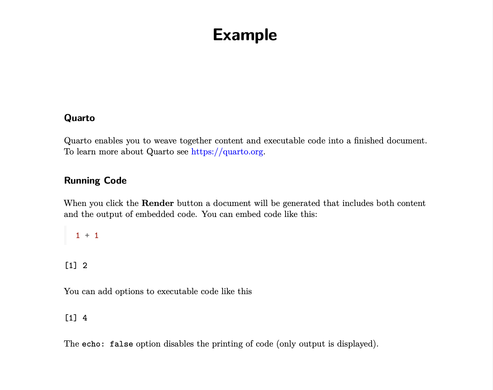
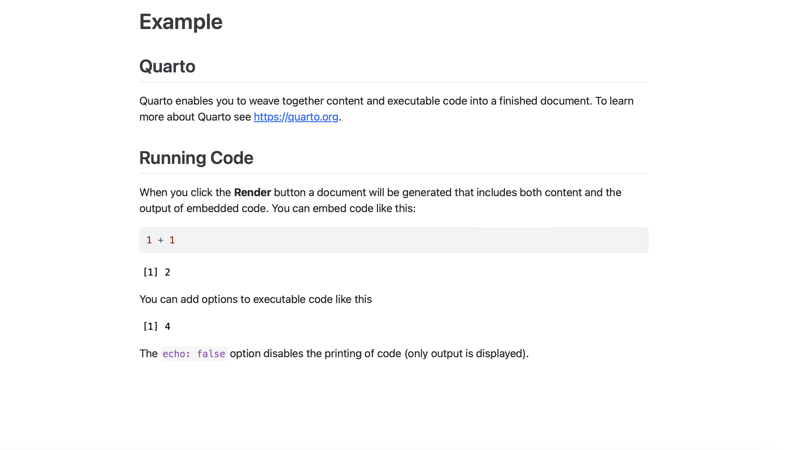
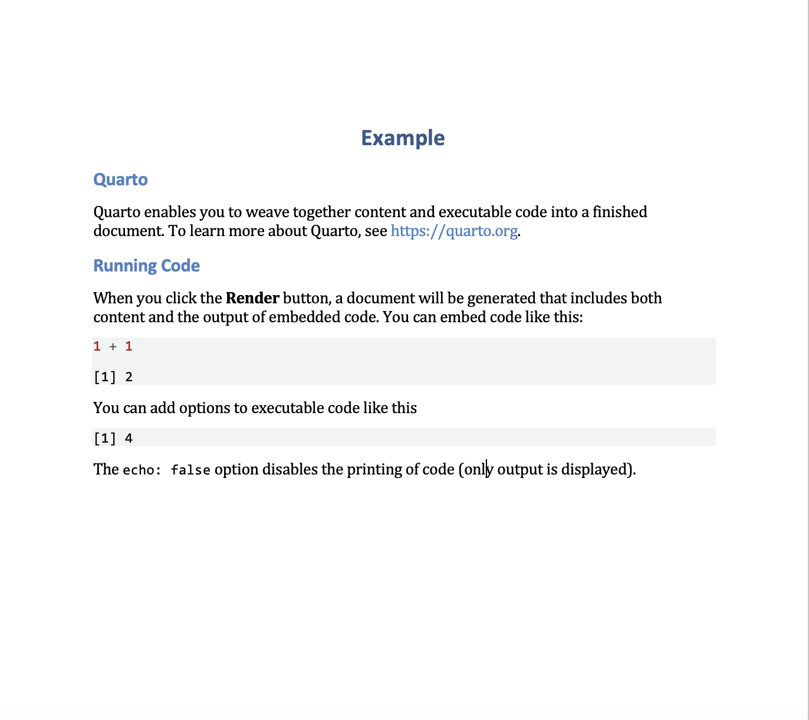
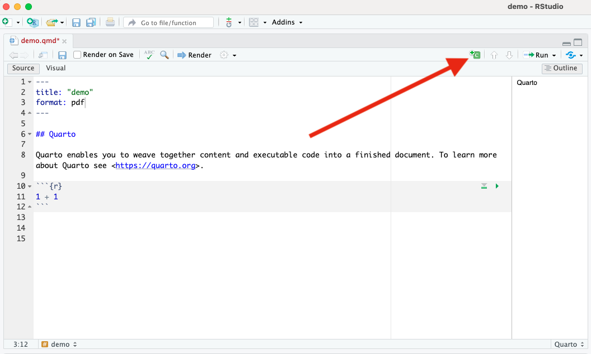
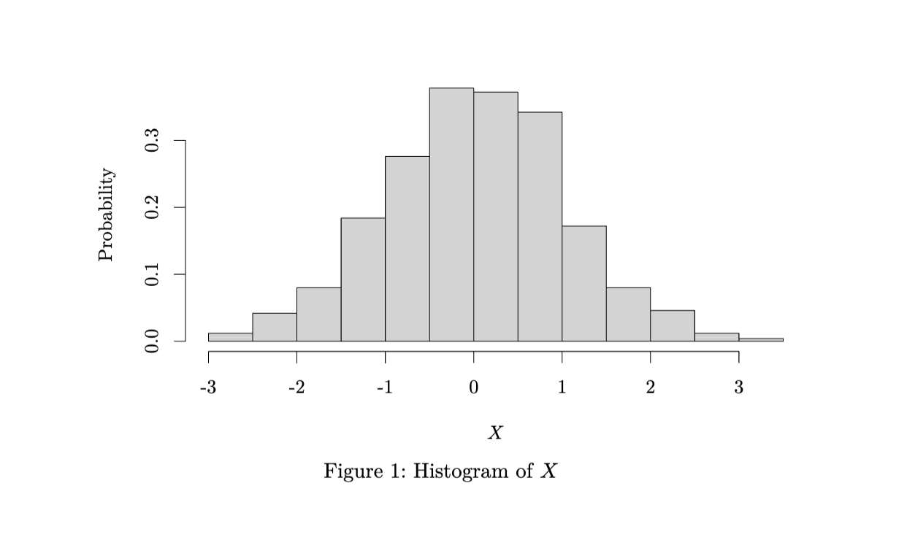
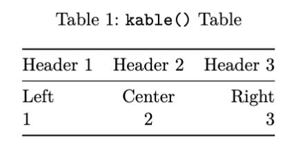

| Software | Type | Primary Use | Output Formats |
|---|---|---|---|
| LaTeX | Typesetting System | High-quality academic documents | PDF, Beamer |
| Sweave | Literate Programming Tool | Embedding R code in LaTeX | PDF, Beamer |
| R Markdown | Reproducible Reporting System | Dynamic reports with R | HTML, PDF, Word, Beamer, PPTX |
| Bookdown | Reproducible Publishing System | Writing books, theses, and long-form documents | HTML, PDF, Word, Beamer, PPTX, EPUB, etc. |
| Quarto | Reproducible Publishing System | Multi-language scientific publishing (reports, books, blogs, presentations) | HTML, PDF, Word, Beamer, PPTX, EPUB, etc. |
Quarto
Luc Clair
University of Winnipeg | ECON/GECON 3201
Preliminaries
Software
Installation order:
- R: https://cran.r-project.org
- R Studio: https://posit.co/download/rstudio-desktop/
- TeX (Follow Quarto’s guide for TeX installation: https://quarto.org/docs/output-formats/pdf-engine.html])
- Quarto is automatically installed when you install R Studio
Introduction
Introduction
- Quarto is an open-source tool designed for creating dynamic documents, reports, presentations, and websites
- It integrates with various programming languages and provides a unified framework for combining code, narrative text, and data visualization
- Quarto is particularly useful for data science, research, and technical communication
Scientific Reports
What makes a report scientific?
- Structured format
- Evidence-based, relies on empirical data, experiments, or observational data
- Uses quatitative or qualitative analysis to support claims
- Replicability
- Use of figures, tables, and equations
- Citations and References
Document Preparation Systems
Quarto Output Formats
Quarto documents can be rendered into multiple formats:
- Documents: Hypertext Markup Language (HTML), PDF, and Word
- Presentations: Reveal.js, Beamer, and PowerPoint
- Interactive: Shiny, Observable JS
- You can refine the look of your document based on the format chosen
- Today’s talk will focus on PDF output and how it compares to LaTeX, however, much of the syntax will translate to the other formats
Output Formats (cont.)
| HTML | Word | |
|---|---|---|
|  |  |  |
Elements of a Quarto Document
YAML Metadata
- Metadata: data about data
- The header at the top of the document contains metadata settings
- Defines title, author, date, format, options, and more
Common Metadata Fields
| Field | Description |
|---|---|
title |
Title of the document |
subtitle |
Subtitle displayed below the title |
author |
Name(s) of the document author(s) |
date |
Date of the document |
format |
Output format (e.g., html, pdf, revealjs, etc.) |
editor |
Editor options like visual or source |
execute |
Code execution options (e.g., echo, eval, warning) |
theme |
Visual theme (for html or revealjs documents) |
Common Metadata Fields (cont.)
| Field | Description |
|---|---|
toc |
Boolean to include a Table of Contents |
number-sections |
Boolean to number section headers |
highlight-style |
Syntax highlighting style for code blocks |
bibliography |
Path to bibliography file for citations |
csl |
Path to CSL file to format citations and references |
filters |
List of Pandoc filters to apply |
lang |
Document language (e.g., en, fr, etc.) |
comments |
Enable commenting system (e.g., hypothesis, utterances) |
title-block-style. |
Controls title page style (default, none, minimal, etc.) |
Text Content
- The body of the document is written using Markdown
- Supports headings, lists, bold/italic text, links, images, and equations
- More on equations later
Section Headings
- Section headings are denoted using
#in Quarto


Lists
| Quarto Syntax | Output |
|---|---|
|
Text formatting
| Quarto Syntax | Output |
|---|---|
*italic s*, **bold**, ***bold italics*** |
italics, bold, bold italics |
superscripts^2^/subscripts~2~ |
superscripts2 / subscripts2 |
~~strikethrough~~ |
|
`verbatim code` |
verbatim code |
Call-Out Blocks
- Create call-out blocks for notes, tips, definitions, theorems, lemmas, warnings, etc.
- E.g., Definition
Call-Out Blocks (cont.)
Definition
Quarto is an open-source, multi-language scientific publishing system that allows users to create dynamic, reproducible documents, presentations, books, and websites using code and markdown.
Code Chunks
Code chunks allow running R, Python, Julia, or other languages inside the document
Two ways to insert an R code chunk:
- Begin with triple backticks
```{r}and end with``` - Add a chunk using the tool in R Studio
- Begin with triple backticks
Code Chunks (cont.)
Code Chunks (cont.)
- E.g., producing a histogram of a standard normal variable \(X\)
```{r}
#| echo: false
#| eval: true
#| fig-cap: "Histogram of $X$"
#| dev: 'tikz'
# For nice looking figures LaTeX figures install tikzDevice
# install.packages("tikzDevice")
set.seed(42) # sets the seed so that the results will stay the same
x <- rnorm(1000,0,1) # Generate a standard normal variable
# Create a histogram
hist(x,
freq = FALSE,
ylab = "Probability",
xlab = "$X$",
main = "")
```Code Chunks (cont.)
Equations
LaTeX
Equations are written using LaTeX syntax i.e.,
- Wrapping equations in
$for in-line equations, e.g.,$y=f(x)$gives \(y=f(x)\) - Wrapping equations in
$$for display math, e.g.,$$y=f(x)$$gives \[y=f(x)\]
- Wrapping equations in
Greek Letters
| Name | Syntax | Output |
|---|---|---|
| Alpha | \alpha |
\(\alpha\) |
| Beta | \beta |
\(\beta\) |
| Gamma | \gamma |
\(\gamma\) |
| Delta | \delta |
\(\delta\) |
| Sigma | \sigma |
\(\sigma\) |
| Pi | \pi |
\(\pi\) |
| Theta | \theta |
\(\theta\) |
Arithmetic Operations
| Name | Syntax | Output |
|---|---|---|
| Addition | + |
\(+\) |
| Subtraction | - |
\(-\) |
| Multiplication | \times |
\(\times\) |
| Division | / |
\(/\) |
| Summation | \sum |
\(\sum\) |
| Product | \prod |
\(\prod\) |
Subscripts and Superscripts
| Purpose | Syntax | Output |
|---|---|---|
| Subscript | x_i |
\(x_i\) |
| Exponent | x^2 |
\(x^2\) |
| Combined | x_i^2 |
\(x_i^2\) |
| Grouped | x^{n+1} |
\(x^{n+1}\) |
Subscripts and Superscripts
- E.g.,
| LaTeX Syntax | Output |
|---|---|
| $$\sum_{i=1}^n x_i $$ |
Fractions, Roots, and Powers
| Purpose | Syntax | Output |
|---|---|---|
| Fraction | \frac{a}{b} |
\(\frac{a}{b}\) |
| Square root | \sqrt{x} |
\(\sqrt{x}\) |
| n-th root | \sqrt[n]{x} |
\(\sqrt[n]{x}\) |
Advanced Symbols
| Name | Syntax | Output |
|---|---|---|
| Integral | \int |
\(\int\) |
| Partial diff | \partial |
\(\partial\) |
| Infinity | \infty |
\(\infty\) |
| Approximate | \approx |
\(\approx\) |
Advanced Symbols (cont.)
- E.g.,
| LaTeX Syntax | Output |
|---|---|
| $$\int_0^1 f(x) dx$$ |
Relational and Logical Symbols
| Purpose | Syntax | Output |
|---|---|---|
| Equals | = |
= |
| Not equal | \neq |
≠ |
| Greater than | > |
> |
| Less than | < |
< |
| Greater or equal | \geq |
≥ |
| Less or equal | \leq |
≤ |
| Implies | \ R i ghtarrow |
⇒ |
| If and only if | \iff |
⇔ |
Text in Math
- Insert text into an equation using
\text{}
Matrices
| LaTeX Syntax | Output |
|---|---|
\begin{bmatrix} ... \end{bmatrix} |
Bracket matrix |
\begin{pmatrix} ... \end{pmatrix} |
Parenthesis matrix |
Matrices (cont.)
- E.g.,
| LaTeX Syntax | Output |
|---|---|
| \[ \ begin{bmatrix} 1 & 2 \\ 3 & 4 \end{bmatrix} \] |
Alignment
- For multi-step equations, use
\begin{aligned}...\end{aligned}
- Use the
&to mark the alignment point (typically around the equals sign=)
- Use
\\to mark a new line
Alignment (cont.)
- E.g.,
| Col1 | Col2 |
|---|---|
$$ \[\begin{aligned} y & = X \beta + \varepsilon \\ \ h a t { \ beta} &= (X'X)^{-1}X'y \end{aligned}\]beta} &= (X’X)^{-1}X’y \end{aligned} X)^{-1}X’y \end{aligned} ’X)^{-1}X’y \end{aligned} X’X)^{-1}X’y \end{aligned} (X’X)^{-1}X’y \end{aligned} $$ |
Equations
- Note: Math mode is only denoted by
$or$$
- LaTeX commands (e.g.,
\begin{equation}...\end{equation}) still work, however, they will only appear in PDF output
- For numbered equations in Quarto, you have to add a label, which is then used for cross-referencing
Equations (cont.)
To add a label, add
{#eq-label}after an equation in display mode- It is important to remember the
eq-prefix
- It is important to remember the
- To reference the equation, simply use
@eq-label - E.g., “
@eq-demodefines the model:$$y=f(x)$$ {#eq-demo}” gives Equation 1 defines the model: \[y=f(x) \qquad(1)\]
Figures and Tables
- Quarto supports dynamic figures and tables
- I could devote entire seminars to figures and tables, so here are some of the basics
- For more info, please see Quarto’s guide:
Figures and Tables
Figures
- Two (of many) ways to insert images/figures into a Quarto document
- Markdown syntax
- R code (Knitr)
Figures and Tables
Markdown Figures Syntax
- The markdown syntax for adding an image is

- E.g.,

Figures and Tables
Markdown Figures Syntax (cont.)
Figures and Tables
Inserting Images Using knitr
knitris the R package that allows us to combine computer languages (statistical software code) and output markup languages (e.g., LaTeX, HTML).
knitrhas a built-in command for including images calledinclude_graphics("path").
- Inputting images using a code chunk allows for greater customization of the image output.
Figures and Tables
Inserting Images Using knitr (cont.)
- For example, we can input the UW Logo .png file using
knitr
Figures and Tables
Tables
- There are two types of tables we want to consider.
- Tables summarizing information in the text.
- Simple tables and grid tables.
- Tables summarizing R output within R chunks.
kable()is available in theknitpackage. To use it, we can useknitr::kable().
- Tables summarizing information in the text.
Figures and Tables
Creating Tables Using R Studio’s Visual Editor
- R Studio Visual editor facilitates the creation of grid tables.
- To create a table using the Visual editor, click “Table” and select “Insert table” from the drop-down menu on the top of the Quarto document.
Visual Editor Menu
Figures and Tables
Creating Tables Using R Studio’s Visual Editor (cont.)
- Now you have a table that you can edit similar to a Word table. Right click your mouse over any cell to see your options

Table Options
Figures and Tables
Creating Tables Using R Studio’s Visual Editor (cont.)
- Note the Align Column option for simple alignment
- Make Col 2 center aligned
Setting Table Column Alignment
Figures and Tables
Creating Tables Using R Studio’s Visual Editor (cont.)
- You can add longer texts to each cell, including bulleted and numbered lists
- However, we must still use some caution as editing markdown tables is not as straightforward as editing word tables
- Another editor is TablesGenerator, which allows you to edit tables in your browser
Figures and Tables
Producing Tables using R Packages
- The R package we will be using is
knitr, specifically, the commandkable()
kable()converts any data frame in R into a pipe table
- A data frame is another word for dataset; however, some output from our analyses will be saved as a data frame
kable()makes it easy to print this output
Figures and Tables
Producing Tables using R Packages (cont.)
- E.g.,
```{r}
#| echo: false
#| tbl-cap: "`kable()` Table"
d <- data.frame("Header 1" = c("Left",1),
"Header 2" = c("Center",2),
"Header 3" = c("Right",3),
check.names = FALSE) # check.names makes sure that the headers don't change
knitr::kable(d,
format = "pipe",
booktabs = T,
escape = FALSE,
align = c("l","c","r"), # Set column alignment
longtable= T) # Keeps the table where you want it in the document
```Figures and Tables
Producing Tables using R Packages (cont.)

Figures and Tables
Cross Referencing
- Add labels to figures using the
#fig-prefix and add labels to tables using the#tbl-prefix
- E.g.,
{#fig-label}can then be referenced by@fig-label.
- Alternatively, if you are adding a figure or table using R, add the execution command
labelto your code chunk, i.e.,#| label: "fig-label"
Referencing and Citations
- An important aspect of academic writing is citing work that is not your own.
- Quarto documents can generate citations and bibliographies using BibLaTeX
.bibor BibTeX.bibtexfiles.
- Note, do not use a “:” in your citation key for a reference. Only use “-” or “_”. For example
smith_2024.
Bibliography
- Once you have created a
.bibfile with your references, you can add a bibliography to your Quarto document using thebibliography:YAML metadata field. E.g.,
Citation Syntax
- To cite a reference saved in your
.bibfile, use the syntax[@cite-key].
- Note that the citation is in a square bracket. If you have more than one citation, separate each cite key by a semi-colon.
Citation Syntax
| Markdown Format | Output |
|---|---|
Sample text [see @bravo_2011, pp. 130-135] |
Sample text (see Bravo, Huynh, and Jacho-Chávez 2011, 130–35) |
Sample text [@bravo_2011; @li_racine_2007] |
Sample text (Bravo, Huynh, and Jacho-Chávez 2011; Li and Racine 2007) |
Citation Syntax
For in-text citations, simply write @cite-key.
| Markdown Format | Output |
|---|---|
@aitchison_aitken_1976 developed… |
Aitchison and Aitken (1976) developed… |
@aitchison_aitken_1976 [p.413] developed… |
Aitchison and Aitken (1976, 413) developed… |
Citation Style
The default citation style is the Chicago Manual of Style
Can change the style of your citation using the
csl:metadata field in the YAML headerYou may want to change the citation style based on personal preference or based on specified requirements (e.g., academic journal, class project, etc.)
E.g.,
Citation Style
For more citation styles, please visit: https://www.zotero.org/styles
Bibliography Generation
To insert a bibliography, simply insert a section with the title
ReferencesIf you want to include an appendix after the references include the following in your reference section:
Summary
Advantages of Quarto
- Simplified syntax
- Integration with R, Python, and Julia
- Automated Citations and Bibliographies
- Multi-format output from a single source
- Automatic cross-referencing for figures, tables and equations
- Easy table creation
When to Use LaTeX Directly?
Journal specific LaTeX formatting
- Can instruct quarto to use a custom template
- Or extract
.texfile usingkeep-tex: truein YAML heading
- Fine-tuned LaTeX customization
References
Aitchison, J., and C. G. G Aitken. 1976. “Multivariate Binary Discrimination by the Kernel Method.” Biometrica 63: 413–20.
Bravo, F., K. P. Huynh, and D. T. Jacho-Chávez. 2011. “Average Derivative Estimation with Missing Responses.” In Missing Data Methods: Cross-Sectional Methods and Applications, edited by D. M. Drukker, 1st ed., 27A:129–54. Emerald Group Publishing Limited.
Li, Qi, and Jeffrey S. Racine. 2007. Nonparametric Econometrics. Princeton, NJ: Princeton University Press.
Posit. 2025. “Quarto Guide.” https://quarto.org/docs/guide/.
Racine, Jeffrey. 2017. “Energy, Economics & Replication.” Department of Economics Working Papers 2017-02. McMaster University. https://ideas.repec.org/p/mcm/deptwp/2017-02.html.
Yihui Xie, Emily Riederer, Christophe Dervieux. 2024. “10.1 the Function Knitr::kable() | r Markdown Cookbook.” https://bookdown.org/yihui/rmarkdown-cookbook/kable.html.
Zhu, Hao. 2024a. “Create Awesome LaTeX Table with Knitr::kable and kableExtra.” 2024. https://haozhu233.github.io/kableExtra/awesome_table_in_pdf.pdf.
———. 2024b. “Create Awesome HTML Table with Knitr::kable and kableExtra.” https://cran.r-project.org/web/packages/kableExtra/vignettes/awesome_table_in_html.html.